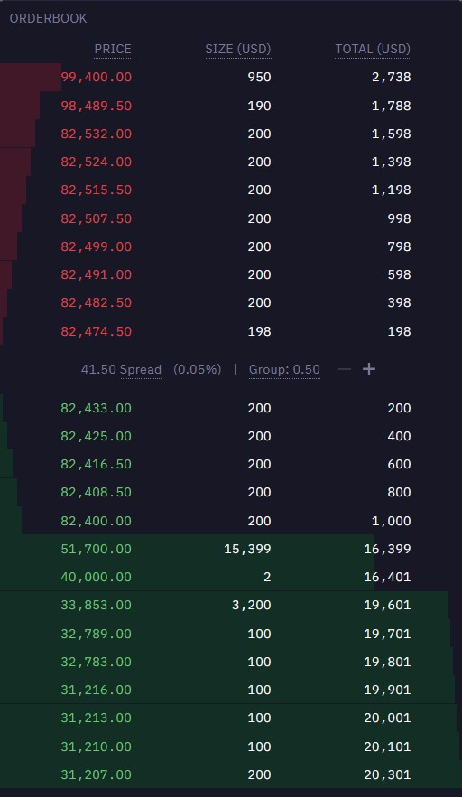
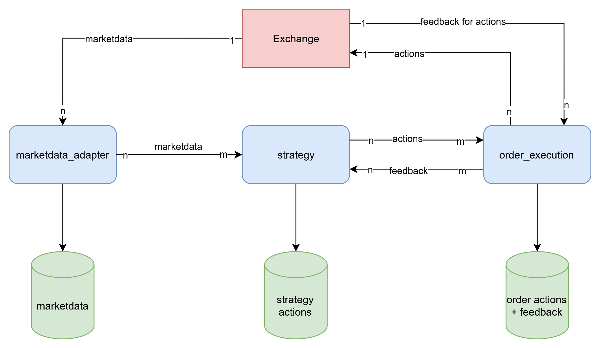
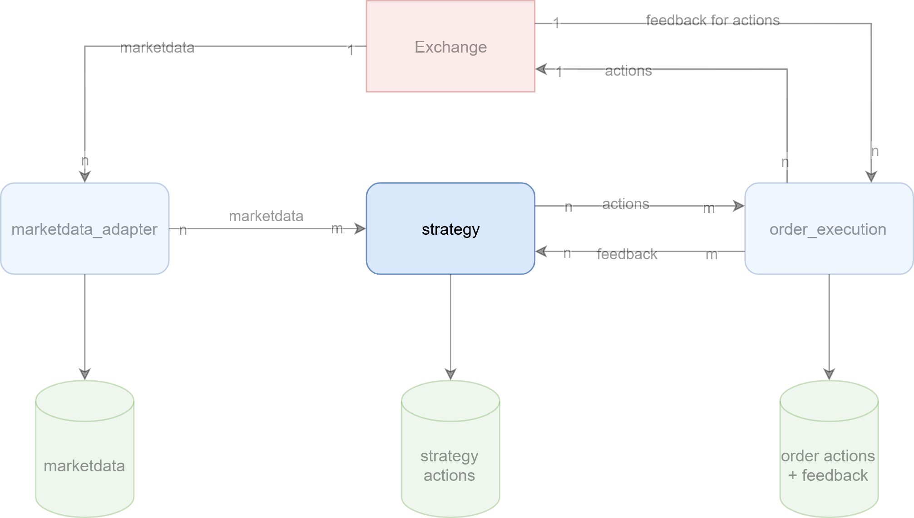
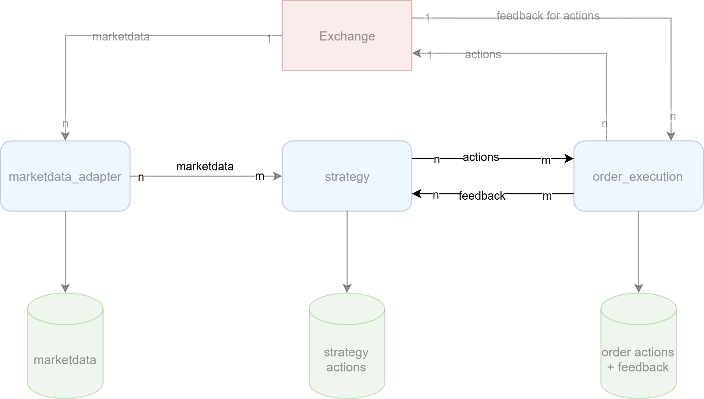
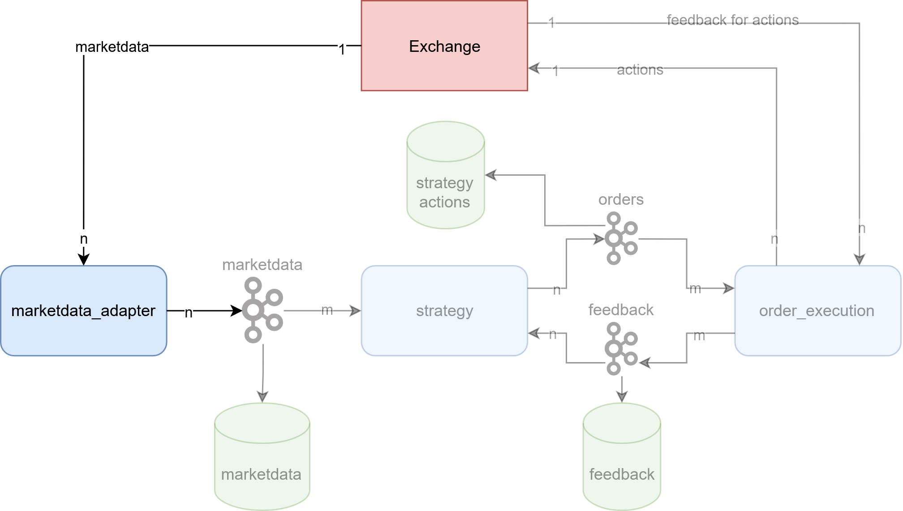
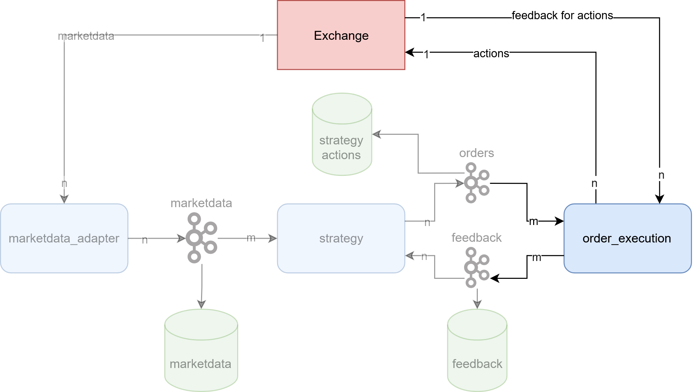
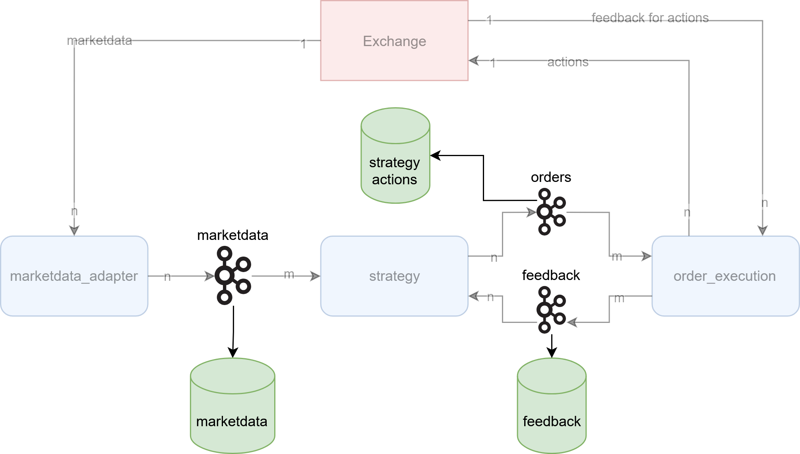

Eugen Geist
2024-04-24
the activity of buying and selling things1
An exchange may be a physical location where traders meet to conduct business or an electronic platform.2
trading on international stock exchanges using computers that have been programmed to buy and sell shares according to fixed rules3
… order book refers to an electronic list of buy and sell orders for a specific security or financial instrument organized by price level.4

I want to
I want to
I need for trading
I need for having records about performed actions
I need for being sufficiently fast to

this is a proof of concept.
it shall demonstrate the typical architecture and components of a trading system.
in real world scenarios, with a bigger team and more resources you might use other approaches, especially faster technology.
due to low-barrier access, a crypto exchange - Kraken futures5 - was used for the proof of concept.
most exchanges have a simulation environment, that can be used for testing - also Kraken futures6.

def send_new_order_to_execution_engine(
*,
sender_identifier: str,
product_id: str,
side: OrderbookSide,
order_type: OrderType,
size: Decimal,
limit_price: Decimal,
stop_price: Decimal | None = None,
) -> str:
...
def send_cancel_order_to_execution_engine(
*,
sender_identifier: str,
product_id: str,
client_order_id: str,
order_id: str | None = None,
):
...def send_modify_order_to_execution_engine(
*,
sender_identifier: str,
product_id: str,
client_order_id: str,
order_id: str | None = None,
process_before: dt.datetime | None = None,
size: Decimal | None = None,
limit_price: Decimal | None = None,
stop_price: Decimal | None = None,
):
...subscription to feedback for orders

the basic mechanisms are to flatten object(s) into a one-dimensional stream of bits, and to turn that stream of bits back into the original object(s). 7
possible candidates
how to send serialized data over network to other component
possible candidates

kraken futures
➡️
internal representation
class BaseMessage(BaseModel):
message_type: MessageType
class BookBase(BaseMessage):
timestamp: int
seq: int
product_id: str
class OrderBookEntry(BaseModel):
price: Decimal
qty: Decimal
class BookSnapshot(BookBase):
message_type: MessageType = MessageType.BOOK_SNAPSHOT
tickSize: Optional[Decimal]
bids: list[OrderBookEntry]
asks: list[OrderBookEntry]
kraken futures
➡️
internal representation
class BaseMessage(BaseModel):
message_type: MessageType
class BookBase(BaseMessage):
timestamp: int
seq: int
product_id: str
class OrderbookSide(StrEnum):
BUY = "buy"
SELL = "sell"
class BookDelta(BookBase):
message_type: MessageType = MessageType.BOOK
side: OrderbookSide
price: Decimal
qty: Decimal

class OrderBase(BaseModel):
action_type: OrderActionType
sender_id: str = UNKNOWN_SENDER_ID
product_id: str
client_order_id: str | None = None
class NewOrder(OrderBase):
action_type: OrderActionType =
OrderActionType.NEW_ORDER
side: OrderbookSide
order_type: OrderType
size: Decimal
limit_price: Decimal
stop_price: Decimal | None = None
➡️
kraken futures
{
"feed": "fills",
"username": "...",
"fills": [
{
"instrument": "PI_XBTUSD",
"time": 1744729661598,
"price": 84889.0,
"seq": 100,
"buy": true,
"qty": 1.0,
"remaining_order_qty": 0.0,
"order_id": "...",
"cli_ord_id": "...",
"fill_id": "...",
"fill_type": "taker",
"fee_paid": 5.9e-09,
"fee_currency": "BTC",
"taker_order_type": "lmt",
"order_type": "lmt"
}
]
}➡️
internal representation
class OrderResponse(BaseModel):
response_type: OrderActionType
sender_id: str = UNKNOWN_SENDER_ID
product_id: str
client_order_id: str | None = None
order_id: str
side: OrderbookSide
size: Decimal
price: Decimal
class Fill(OrderResponse):
response_type: OrderActionType =
OrderActionResponseType.FILL
time: int
fill_id: str
remaining_size: Decimal

Differentiation mainly comes down to usage
during live trading
outside of live trading
➡️ parquet
https://github.com/e-geist/ddtp
{kind=link}